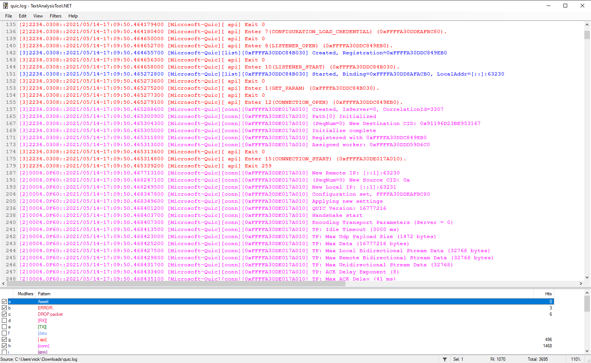
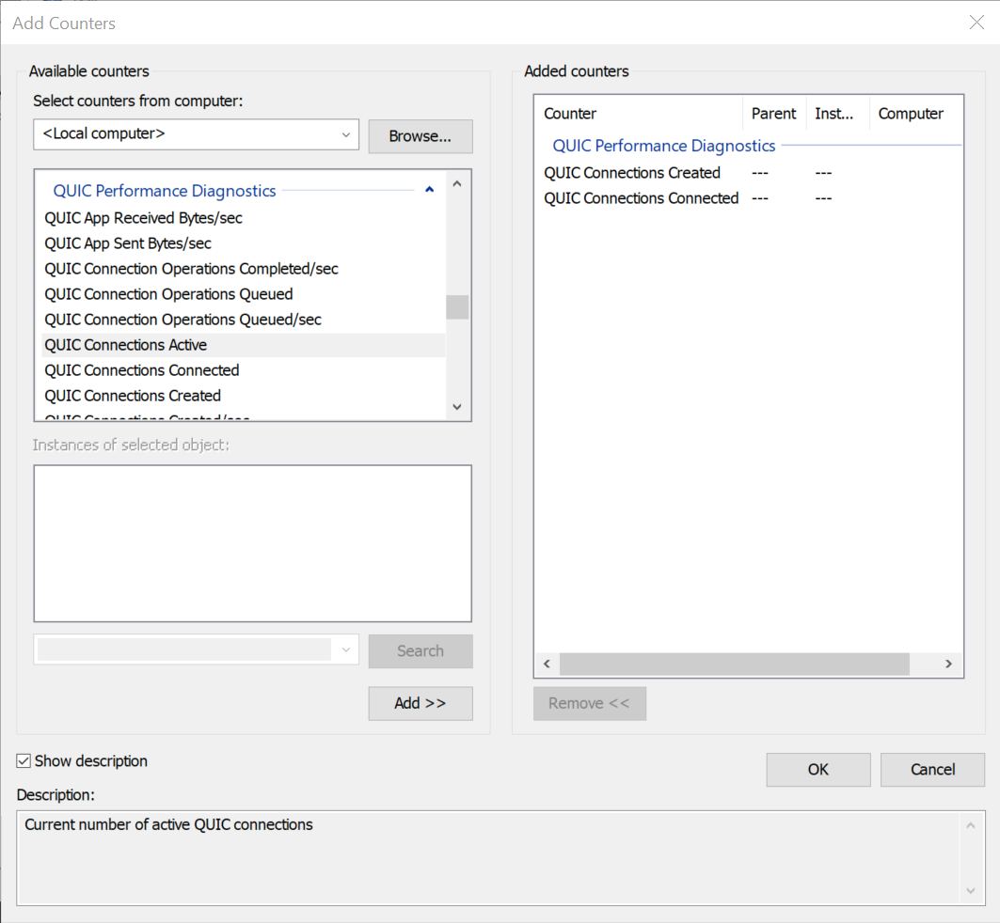

Diagnosing Issues with MsQuic
This document describes various ways to debug and diagnose issues when using MsQuic.
Built-in Tracing
For debugging issues, logging is generally the best way to diagnose problems. MsQuic has extensive logs in the code to facilitate debugging. The logs can simply be converted to human readable text or they can be processed by various automated tools to help improve diagnostics.
Note Currently tools only support Windows ETW.
Windows
On Windows, MsQuic leverages manifested ETW for its logging. All dependencies should be included with Windows; nothing additional should be required.
Linux
stdout
The easiest and quickest way to enable msquic logging is by compiling msquic with the following cmake arguments to direct the logs to standard output:
cmake -D QUIC_ENABLE_LOGGING=ON -D QUIC_LOGGING_TYPE=stdout ...
LTTng
On Linux, MsQuic leverages LTTng for its logging. Some dependencies, such as babeltrace, lttng, and clog2text_lttng are required. The simplest way to install all dependencies is by running ./scripts/prepare-machine.ps1 -ForTest, but if you only want to collect the traces on the machine, the minimal dependencies are:
sudo apt-add-repository ppa:lttng/stable-2.13
sudo apt-get update
sudo apt-get install -y lttng-tools
Perf
For general tracing, refer Stacks and CPU usage
macOS
Tracing is currently unsupported on macOS.
Trace Collection
Windows
There are a lot of general tools and ways to collect and interact with ETW. In the sections below are our recommended ways to collect and consume the MsQuic ETW logs. MsQuicEtw.man specifies all the details for each event. For instance:
<event
keywords="ut:Connection ut:DataFlow"
level="win:Verbose"
message="$(string.Etw.ConnOutFlowStats)"
opcode="Connection"
symbol="QuicConnOutFlowStats"
template="tid_CONN_OUT_FLOW_STATS"
value="5140"
/>
This details everything about the QuicConnOutFlowStats event (see ConnOutFlowStats in the code), including it's level (verbose) and it's keywords (ut:Connection and ut:DataFlow). So this event would be collected if the level is 5 or higher and either the ut:Connection or the ut:DataFlow keywords are configured.
The numeric value for the keywords is at the top of the manifest file:
<keyword
mask="0x0000000000000020"
name="ut:Connection"
/>
<keyword
mask="0x0000000040000000"
name="ut:DataFlow"
/>
netsh.exe
netsh.exe (short for Net Shell, but generally pronounced "net-s-h") is an inbox Windows command line tool. It has many uses, but one of the most used is around tracing (at least for the networking community).
To start collecting a trace with netsh, use the following command:
netsh.exe trace start overwrite=yes report=dis correlation=dis traceFile=quic.etl provider={ff15e657-4f26-570e-88ab-0796b258d11c} level=0x5 keywords=0xffffffff
There are a lot of parameters being passed and if you want the complete help text explaining them all you can run netsh.exe trace start help. A few of the important parameters are:
traceFile - The name/path of the output ETL file that the logs will be saved to.
provider - The GUID of the ETW provider that should be collected. In this case,
{ff15e657-4f26-570e-88ab-0796b258d11c}is the GUID for the MsQuic provider.level - The level at which to collect traces.
5indicates theverboselevel.4isinformational.keywords - The set of flags that indicate which type of events should be collected. The command above collects all keywords (
0xffffffff) which may be too verbose for some scenarios, such as high throughput testing or large number of parallel connections. For a detailed list of the available keywords, see MsQuicEtw.man and see<keywords>.
Once you are done with collecting all the events, to stop the trace session, use the following command:
netsh.exe trace stop
This will flush and finalize the output ETL file specified in the netsh trace start command. This ETL file can either be converted to text or used in the automated tools.
wpr.exe
wpr.exe is another inbox Windows command line tool that can be used to collect ETW traces, but it requires an additional "profile" file: MsQuic.wprp. This WPR profile file details several specifically tailored trace configurations. To use it, you must copy MsQuic.wprp to the machine you wish to collect the traces for, you can simply run the following to start trace collection:
wpr.exe -start MsQuic.wprp!PROFILE -filemode
You must replace PROFILE with the name of the profile you want to run. Some of the useful profiles are:
Stacks.Light- Collects CPU callstacks.Stacks.Verbose- Collects CPU callstacks, DPCs and interrupts.Performance.Light- Collects performance related events useful for automated tool processing.Performance.Verbose- CollectsPerformance.Lightplus CPU callstacks.Basic.Light- Collects general, "low volume" MsQuic events. Useful for a "big picture" understanding, with as few events collected as possible.Basic.Verbose- Collects all MsQuic events. This is very verbose.Scheduling.Verbose- Collects "low volume" and scheduling related MsQuic events.Datapath.Light- Collects "low volume" and datapath related MsQuic events.Datapath.Verbose- CollectsDatapath.Lightplus CPU callstacks.Full.Light- Collects all MsQuic events as well as TAEF events. For most, this will be equivalent toBasic.Verbose.Full.Verbose- Collects all MsQuic events, TAEF events and several networking components' events. This is the most verbose possible, and should only be used for the most minimal scenarios.
When you're done and ready to collect the logs, you run:
wpr.exe -stop ETL_PATH
You must replace ETL_PATH with the path of the output ETL file that you want to be written.
If you no longer need the logs being collected, you can cancel a trace instead of saving it to file:
wpr.exe -cancel
Other Ways
As already indicated, there are lots of ways to collect ETW traces. Feel free to look at Configuring and Starting an Event Tracing Session for more information.
Linux
All in one command
This script wraps collecting trace then converting to text as well
WARN: This wrapper doesn't work with ./scripts/test.ps1 etc. as it is also creating lttng session internally.
cd ${MSQUIC_PATH}
./scripts/log_wrapper.sh ${YOUR_COMMAND}
# e.g.
./scripts/log_wrapper.sh ./artifacts/bin/linux/x64_Debug_openssl/msquictest --gtest_filter=Basic.*
ls msquic_lttng0
# data quic.babel.txt quic.log
Step by step command
Instead, you can use the following commands:
mkdir msquic_lttng
lttng create msquic -o=./msquic_lttng
lttng enable-event --userspace "CLOG_*"
lttng add-context --userspace --type=vpid --type=vtid
lttng start
And to stop log the trace session, you can use the following command:
lttng stop msquic
Trace Conversion to Text
Windows
To convert an ETL file to human-readable text, you can use the following netsh.exe command:
netsh.exe trace convert quic.etl overwrite=yes
If you're using a version of MsQuic that uses an ETW manifest version more recent than the one built into the Windows image, decoding may not provide correct output. To solve this issue, newer versions of Windows (11 and Server 2022) support a manpath parameter that can be used to manually specify a manifest. This will likely always be needed for apps using MsQuic in user mode.
netsh.exe trace convert quic.etl manpath=path/to/manifest/MsQuicEtw.man
For older versions of Windows that don't support the manpath parameter, you can manually update the installed manifest that is used to decode the file. You can run the following wevtutil.exe commands in an Admin window:
wevtutil.exe um path\to\MsQuicEtw.man
wevtutil.exe im path\to\MsQuicEtw.man /rf:path\to\msquic.dll /mf:path\to\msquic.dll
Replace path\to with the actual paths to the respective files. With the latest manifests installed, now the normal netsh.exe convert command should work.
Linux
NOTE: msquic.lttng.so must be built to enable lttng logging - see https://lttng.org/docs/v2.13/#doc-liblttng-ust-dl
and it must be placed in the same directory as the msquic.so.
Building clog2text_lttng:
cat > /etc/apt/preferences.d/99microsoft-dotnet.pref <<EOF
Package: *
Pin: origin "packages.microsoft.com"
Pin-Priority: 1001
EOF
apt update
apt install --no-install-recommends -y dotnet-runtime-6.0 dotnet-sdk-6.0 dotnet-host
git submodule update --init submodules/clog
dotnet build submodules/clog/src/clog2text/clog2text_lttng/ -c Release
Note
if you see error "A fatal error occurred. The folder [/usr/share/dotnet/host/fxr] does not exist"
follow steps in https://stackoverflow.com/questions/73753672/a-fatal-error-occurred-the-folder-usr-share-dotnet-host-fxr-does-not-exist
To convert the trace, you can use the following commands:
babeltrace --names all ./msquic_lttng/* > quic.babel.txt
~/.dotnet/tools/clog2text_lttng -i quic.babel.txt -s clog.sidecar -o quic.log --showTimestamp --showCpuInfo
Note The
clog.sidecarfile that was used to build MsQuic must be used. It can be found in the./src/manifestdirectory of the repository.
Trace Analysis
MsQuic supports a custom plugin for Windows Performance Analyzer (WPA) to detailed analysis of ETW traces. See the WPA instructions for more details.
Text Analysis Tool
When viewing the traces as text, we recommend TextAnalysisTool.NET (Windows only) and we have several filter files we maintain for it (folder). The different filters are meant to quickly highlight and color code important information.

You may also open the trace in Windows Performance Analyzer. See the WPA instructions for more details.
Note WPA support for LTTng based logs is not yet available but will be supported in the future.
Performance Counters
To assist investigations into running systems, MsQuic has a number of performance counters that are updated during runtime. These counters are exposed as an array of unsigned 64-bit integers, via a global GetParam parameter.
Sample code demonstrating how to query the performance counters:
uint64_t Counters[QUIC_PERF_COUNTER_MAX];
uint32_t BufferLength = sizeof(Counters);
MsQuic->GetParam(
NULL,
QUIC_PARAM_GLOBAL_PERF_COUNTERS,
&BufferLength,
Counters);
Each of the counters available is described here: Counter | Description --------|------------ QUIC_PERF_COUNTER_CONN_CREATED | Total connections ever allocated QUIC_PERF_COUNTER_CONN_HANDSHAKE_FAIL | Total connections that failed during handshake QUIC_PERF_COUNTER_CONN_APP_REJECT | Total connections rejected by the application QUIC_PERF_COUNTER_CONN_RESUMED | Total connections resumed QUIC_PERF_COUNTER_CONN_ACTIVE | Connections currently allocated QUIC_PERF_COUNTER_CONN_CONNECTED | Connections currently in the connected state QUIC_PERF_COUNTER_CONN_PROTOCOL_ERRORS | Total connections shutdown with a protocol error QUIC_PERF_COUNTER_CONN_NO_ALPN | Total connection attempts with no matching ALPN QUIC_PERF_COUNTER_STRM_ACTIVE | Current streams allocated QUIC_PERF_COUNTER_PKTS_SUSPECTED_LOST | Total suspected packets lost QUIC_PERF_COUNTER_PKTS_DROPPED | Total packets dropped for any reason QUIC_PERF_COUNTER_PKTS_DECRYPTION_FAIL | Total packets with decryption failures QUIC_PERF_COUNTER_UDP_RECV | Total UDP datagrams received QUIC_PERF_COUNTER_UDP_SEND | Total UDP datagrams sent QUIC_PERF_COUNTER_UDP_RECV_BYTES | Total UDP payload bytes received QUIC_PERF_COUNTER_UDP_SEND_BYTES | Total UDP payload bytes sent QUIC_PERF_COUNTER_UDP_RECV_EVENTS | Total UDP receive events QUIC_PERF_COUNTER_UDP_SEND_CALLS | Total UDP send API calls QUIC_PERF_COUNTER_APP_SEND_BYTES | Total bytes sent by applications QUIC_PERF_COUNTER_APP_RECV_BYTES | Total bytes received by applications QUIC_PERF_COUNTER_CONN_QUEUE_DEPTH | Current connections queued for processing QUIC_PERF_COUNTER_CONN_OPER_QUEUE_DEPTH | Current connection operations queued QUIC_PERF_COUNTER_CONN_OPER_QUEUED | Total connection operations queued ever QUIC_PERF_COUNTER_CONN_OPER_COMPLETED | Total connection operations processed ever QUIC_PERF_COUNTER_WORK_OPER_QUEUE_DEPTH | Current worker operations queued QUIC_PERF_COUNTER_WORK_OPER_QUEUED | Total worker operations queued ever QUIC_PERF_COUNTER_WORK_OPER_COMPLETED | Total worker operations processed ever QUIC_PERF_COUNTER_PATH_VALIDATED | Total path challenges that succeed ever QUIC_PERF_COUNTER_PATH_FAILURE | Total path challenges that fail ever QUIC_PERF_COUNTER_SEND_STATELESS_RESET | Total stateless reset packets sent ever QUIC_PERF_COUNTER_SEND_STATELESS_RETRY | Total stateless retry packets sent ever QUIC_PERF_COUNTER_CONN_LOAD_REJECT | Total connections rejected due to worker load.
Windows Performance Monitor
On the latest version of Windows, these counters are also exposed via PerfMon.exe under the QUIC Performance Diagnostics category. The values exposed via PerfMon only represent kernel mode usages of MsQuic, and do not include user mode counters.

ETW
Counters are also captured at the beginning of MsQuic ETW traces, and unlike PerfMon, includes all MsQuic instances running on the system, both user and kernel mode.
Network Troubleshooting
To see what is being transmited on the wire you might use an open-source tool like Wireshark. The packets captured by such tool will be encrypted due to TLS, therefore we must provide the secrets to enable Wireshark to decrypt the packets.
To enable this we must generate a SSLKEYLOGFILE with information about the secrets used in the TLS connection. With such file we will be able to decrypt the packets.
For some browsers all you have to do is to set an environment variable SSLKEYLOGFILE with the absolute path of the log file to be generated and then you can load it into Wireshark for troubleshooting. For MsQuic applications we need to generate such file. A good practice is to check if the SSLKEYLOGFILE env variable is set and if so you write the file. The steps are:
- Set the
QUIC_PARAM_CONN_TLS_SECRETSconnection param with a struct to be populated with the TLS secrets by MsQuic.
// Define empty struct for the TLS Secrets
QUIC_TLS_SECRETS ClientSecrets{};
...
// Get the value of the env variable to log the secrets
const char* SslKeyLogFile = getenv("SSLKEYLOGFILE");
...
// If the variable is set then we have a file to write the TLS secrets thus we
// pass the struct to be filled
if (SslKeyLogFile != NULL) {
MsQuic->SetParam(Connection, QUIC_PARAM_CONN_TLS_SECRETS, sizeof(ClientSecrets), &ClientSecrets);
// Check for errors...
}
- Write the file when the connection succeeds (event
QUIC_CONNECTION_EVENT_CONNECTED).
// On your connection callback function
...
if (Event->Type == QUIC_CONNECTION_EVENT_CONNECTED) {
if (SslKeyLogFile != NULL) {
WriteSslKeyLogFile(SslKeyLogFile, ClientSecrets);
}
}
Write the
WriteSslKeyLogFilefunction. You can just copy the function from src/inc/msquichelper.h#WriteSslKeyLogFile if it serves your needs or write your own.Set the
SSLKEYLOGFILEenv variable set to the path of the log file and run the program. Then check the file with the secets.Load the key log into Wireshark and start capturing to decrypt the packets. To learn how to load such file inside Wireshark refer to this documentation: Using the (Pre)-Master-Secret.
Using a Wireshark version that supports QUIC is not mandatory but could help when troubleshooting. To know which version supports QUIC refer to https://github.com/quicwg/base-drafts/wiki/Tools#wireshark.
If you need a working example on how to generate the key log file please refer to the Sample at src/tools/sample/sample.c.
Detailed Troubleshooting
For detailed trouble shooting steps please see the MsQuic Trouble Shooting Guide.